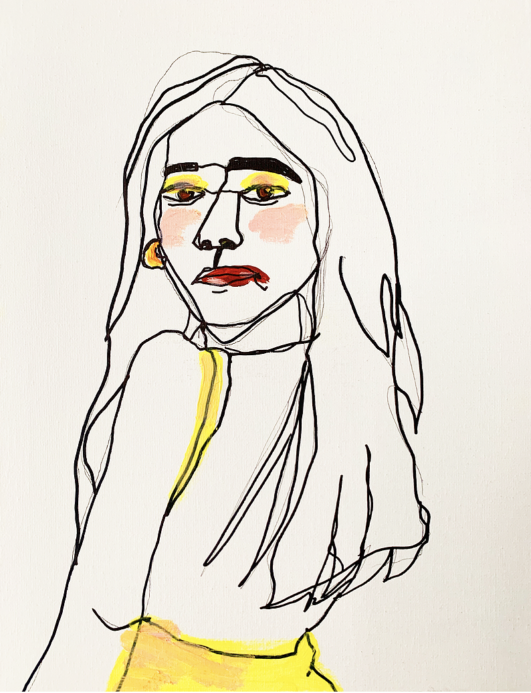

Some of my work
Project 1
This is one of the paintings I've made during lockdown.
Not going to lie, I was looking at Jennie from Black Pink when I was drawing this girl. Although this does not look anything at all like Jennie, I still like how it turned out and the yellow accent on her.
Please remember that this is just an example of my art work. This page will be soon replaced with the projects I'll be completing during my coding bootcamp.
Project 2

This is another piece of art I've made during lockdown as well. My good friend from high school, Annelyn, bought her first house in Dallas, Texas, and I gave this to her as her birthday gift.
She has always appreciated my art work, and I miss her very much!
Project 3

This is my most recent work/one of my few digital work. I made this for an artist named Ric.Indigo and his first single. It was very meaningful for me to be apart of someone's hard work.
If you'd like to check out his album, click on the album cover on the right!